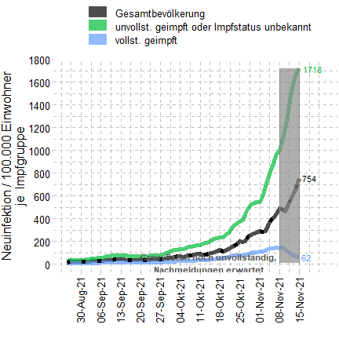
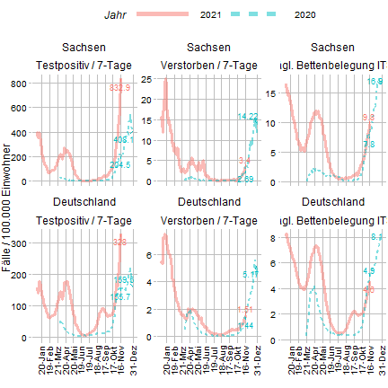

# Setup ---- rm(list = ls()) library(data.table) library(ggplot2) library(ggthemes) library(magrittr) library(scales) require(toolboxH) require(here) require(lubridate) require(stringr) # data: https://www.coronavirus.sachsen.de/infektionsfaelle-in-sachsen-4151.html dat_pre <- read_excel2(here("data/sms_vaccination_data.xlsx")) dat_pre[,Datum:= as_date(Datum)] setorder(dat_pre, -Datum,-Datenstand) dat_pre[allDuplicatedEntries(Datum)]
## Datenstand Datum non_vacc incidence vacc ## 1: 2021-11-15 2021-11-02 584.2 284.4 111.1 ## 2: 2021-11-10 2021-11-02 584.0 284.4 110.3 ## 3: <NA> 2021-11-03 686.1 289.7 119.9 ## 4: 2021-11-10 2021-11-03 691.6 289.7 114.0 ## 5: <NA> 2021-11-04 747.2 336.4 130.9 ## 6: 2021-11-10 2021-11-04 765.9 336.4 113.8 ## 7: <NA> 2021-11-05 830.5 385.7 138.4 ## 8: 2021-11-11 2021-11-05 852.0 385.7 119.1 ## 9: 2021-11-10 2021-11-05 856.4 385.7 114.8 ## 10: <NA> 2021-11-06 907.4 415.8 140.6 ## 11: 2021-11-11 2021-11-06 934.0 415.8 116.5 ## 12: 2021-11-10 2021-11-06 941.4 415.8 108.7 ## 13: <NA> 2021-11-07 965.6 444.0 141.8 ## 14: 2021-11-11 2021-11-07 997.3 444.0 113.6 ## 15: 2021-11-10 2021-11-07 1007.3 444.0 103.2 ## 16: <NA> 2021-11-08 1002.8 491.3 141.1 ## 17: 2021-11-11 2021-11-08 1035.9 491.3 111.8 ## 18: 2021-11-10 2021-11-08 1046.6 491.3 100.6 ## 19: <NA> 2021-11-09 1076.6 483.7 143.9 ## 20: 2021-11-11 2021-11-09 1112.9 483.7 108.2 ## 21: 2021-11-10 2021-11-09 1111.6 483.7 94.1 ## 22: <NA> 2021-11-10 1188.6 459.4 130.0 ## 23: 2021-11-11 2021-11-10 1196.0 459.4 88.9 ## 24: 2021-11-10 2021-11-10 1152.5 459.4 70.7 ## 25: <NA> 2021-11-11 1339.4 521.9 110.4 ## 26: 2021-11-11 2021-11-11 1259.8 521.9 72.2 ## Datenstand Datum non_vacc incidence vacc
dat_pre2 = dat_pre[is.na(non_vacc)==F][duplicated(Datum)==F] dat_pre2
## Datenstand Datum non_vacc incidence vacc ## 1: <NA> 2021-11-15 1718.3 754.3 61.7 ## 2: <NA> 2021-11-14 1675.0 670.9 65.7 ## 3: <NA> 2021-11-13 1604.0 620.7 77.7 ## 4: <NA> 2021-11-12 1492.8 569.0 91.4 ## 5: <NA> 2021-11-11 1339.4 521.9 110.4 ## 6: <NA> 2021-11-10 1188.6 459.4 130.0 ## 7: <NA> 2021-11-09 1076.6 483.7 143.9 ## 8: <NA> 2021-11-08 1002.8 491.3 141.1 ## 9: <NA> 2021-11-07 965.6 444.0 141.8 ## 10: <NA> 2021-11-06 907.4 415.8 140.6 ## 11: <NA> 2021-11-05 830.5 385.7 138.4 ## 12: <NA> 2021-11-04 747.2 336.4 130.9 ## 13: <NA> 2021-11-03 686.1 289.7 119.9 ## 14: 2021-11-15 2021-11-02 584.2 284.4 111.1 ## 15: 2021-11-10 2021-11-01 546.4 291.6 107.3 ## 16: 2021-11-10 2021-10-31 543.0 276.8 105.3 ## 17: 2021-11-10 2021-10-30 532.8 266.4 101.5 ## 18: 2021-11-10 2021-10-29 523.0 253.9 96.9 ## 19: 2021-11-10 2021-10-28 487.6 238.6 92.2 ## 20: 2021-11-10 2021-10-27 437.5 200.8 86.2 ## 21: 2021-11-10 2021-10-26 389.7 191.7 78.7 ## 22: 2021-11-10 2021-10-25 371.9 196.8 76.0 ## 23: 2021-11-10 2021-10-24 360.3 178.0 74.6 ## 24: 2021-11-10 2021-10-23 336.2 159.0 72.7 ## 25: 2021-11-10 2021-10-22 302.4 142.5 69.5 ## 26: 2021-11-10 2021-10-21 276.6 128.9 63.6 ## 27: 2021-11-10 2021-10-20 254.4 116.5 58.3 ## 28: 2021-11-10 2021-10-19 237.0 113.7 49.8 ## 29: 2021-11-10 2021-10-18 231.5 123.3 48.1 ## 30: 2021-11-10 2021-10-17 226.3 113.8 47.9 ## 31: 2021-11-10 2021-10-16 219.0 105.2 44.7 ## 32: 2021-11-10 2021-10-15 204.6 98.9 40.2 ## 33: 2021-11-10 2021-10-14 194.8 92.5 37.3 ## 34: 2021-11-10 2021-10-13 187.7 85.9 34.3 ## 35: 2021-11-10 2021-10-12 178.7 85.3 33.2 ## 36: 2021-11-10 2021-10-11 167.1 91.2 31.4 ## 37: 2021-11-10 2021-10-10 165.8 87.3 31.4 ## 38: 2021-11-10 2021-10-09 160.2 80.8 31.0 ## 39: 2021-11-10 2021-10-08 154.3 77.8 30.4 ## 40: 2021-11-10 2021-10-07 150.6 74.0 29.6 ## 41: 2021-11-10 2021-10-06 140.9 67.9 28.2 ## 42: 2021-11-10 2021-10-05 129.7 65.5 25.8 ## 43: 2021-11-10 2021-10-04 127.8 71.0 25.6 ## 44: 2021-11-10 2021-10-03 127.0 68.9 25.6 ## 45: 2021-11-10 2021-10-02 121.6 62.2 24.2 ## 46: 2021-11-10 2021-10-01 115.8 58.2 22.5 ## 47: 2021-11-10 2021-09-30 105.5 53.2 21.3 ## 48: 2021-11-10 2021-09-29 94.2 45.3 18.7 ## 49: 2021-11-10 2021-09-28 82.3 40.2 15.6 ## 50: 2021-11-10 2021-09-27 76.9 42.5 14.2 ## 51: 2021-11-10 2021-09-26 77.6 40.8 14.1 ## 52: 2021-11-10 2021-09-25 77.5 38.9 13.5 ## 53: 2021-11-10 2021-09-24 73.5 38.3 13.8 ## 54: 2021-11-10 2021-09-23 71.1 37.5 13.1 ## 55: 2021-11-10 2021-09-22 70.5 35.3 13.9 ## 56: 2021-11-10 2021-09-21 70.0 36.8 14.5 ## 57: 2021-11-10 2021-09-20 70.1 39.9 15.2 ## 58: 2021-11-10 2021-09-19 69.1 31.7 15.2 ## 59: 2021-11-10 2021-09-18 70.9 36.6 15.0 ## 60: 2021-11-10 2021-09-17 71.2 37.9 14.0 ## 61: 2021-11-10 2021-09-16 72.4 38.0 13.9 ## 62: 2021-11-10 2021-09-15 73.2 36.8 13.3 ## 63: 2021-11-10 2021-09-14 78.2 40.1 13.2 ## 64: 2021-11-10 2021-09-13 78.4 43.6 12.5 ## 65: 2021-11-10 2021-09-12 77.3 41.2 12.3 ## 66: 2021-11-10 2021-09-11 75.8 39.5 12.5 ## 67: 2021-11-10 2021-09-10 72.9 37.8 12.0 ## 68: 2021-11-10 2021-09-09 70.5 35.8 11.9 ## 69: 2021-11-10 2021-09-08 67.4 32.2 12.2 ## 70: 2021-11-10 2021-09-07 56.3 29.3 11.2 ## 71: 2021-11-10 2021-09-06 52.9 30.3 11.3 ## 72: 2021-11-10 2021-09-05 54.5 29.0 8.8 ## 73: 2021-11-10 2021-09-04 49.9 26.6 8.6 ## 74: 2021-11-10 2021-09-03 47.1 25.1 9.0 ## 75: 2021-11-10 2021-09-02 42.7 22.7 8.3 ## 76: 2021-11-10 2021-09-01 38.4 19.5 8.0 ## 77: 2021-11-10 2021-08-31 37.1 19.3 7.2 ## 78: 2021-11-10 2021-08-30 35.4 20.3 7.0 ## 79: 2021-11-10 2021-08-29 34.7 19.7 7.0 ## 80: 2021-11-10 2021-08-28 33.9 18.6 7.1 ## 81: 2021-11-10 2021-08-27 33.4 18.5 7.3 ## 82: 2021-11-10 2021-08-26 31.8 17.9 7.6 ## 83: 2021-11-10 2021-08-25 30.9 16.2 7.2 ## Datenstand Datum non_vacc incidence vacc
maxdat = max(dat_pre2$Datum) maxdat
## [1] "2021-11-15"
dat = melt(dat_pre2[Datum <= maxdat], id.vars = "Datum", measure.vars = c("vacc", "non_vacc", "incidence"), variable.name = "group", value.name = "count") dat
## Datum group count ## 1: 2021-11-15 vacc 61.7 ## 2: 2021-11-14 vacc 65.7 ## 3: 2021-11-13 vacc 77.7 ## 4: 2021-11-12 vacc 91.4 ## 5: 2021-11-11 vacc 110.4 ## --- ## 245: 2021-08-29 incidence 19.7 ## 246: 2021-08-28 incidence 18.6 ## 247: 2021-08-27 incidence 18.5 ## 248: 2021-08-26 incidence 17.9 ## 249: 2021-08-25 incidence 16.2
dat[,group2 := ifelse(group=="vacc", "vollst. geimpft", ifelse(group=="non_vacc", "unvollst. geimpft", ifelse(group=="incidence", "Gesamtbevölkerung", group)))] # quick preview brk_vek = seq(max(dat$Datum), min(dat$Datum), -7) maxi = dat[Datum %in% c(dat[,.(maxdat =max(Datum)), group]$maxdat)] p1 = ggplot(dat, aes(x = Datum, y = count, col = group2 ) ) + ylab("Neuinfektion / 100.000 Einwohner\nje Impfgruppe")+ # scale_y_continuous(breaks = pretty_breaks(10))+ scale_y_log10(breaks = log_breaks(15))+ scale_x_date(breaks = brk_vek, labels = label_date(format = "%d-%b-%y"), limits = c(min(dat$Datum), maxdat+9))+ theme_pander(base_size = 16)+ theme(axis.text.x = element_text(angle = 90, vjust = 0.4, hjust = 0), legend.position = "top")+ geom_line(lwd = 2, alpha=0.7) + xlab("") + labs(color = "")+ guides(col = guide_legend(nrow = 2,override.aes=list(size=5),keywidth = 2))+ scale_color_manual(values = c( "black",hue_pal()(3)[2], hue_pal()(3)[3])) + geom_line(data = dat[group =="incidence"],lwd = 2, alpha=1, lty = 3, col = "black") + geom_ribbon(aes(xmin = max(Datum)-7, xmax = max(Datum)), fill = "grey55", alpha = 0.7, col = "grey55") + annotate(geom = 'text', x = as_date("2021/10/14"), y = 10, label = "Grau: Daten noch unvollständig,\nNachmeldungen erwartet", col = "grey33", fontface = "bold")+ geom_text(data = maxi, aes(label = count ), size=4, alpha = 1,hjust= -0.2, show.legend=FALSE) p1 + scale_y_continuous(breaks = pretty_breaks(10))

p1
p_check = ggplot(melt(dat_pre, id.vars = c('Datenstand', 'Datum'), value.name = "count", variable.name = 'group2'), aes(x = Datum, y = count, col = group2 ) ) + ylab("Neuinfektion / 100.000 Einwohner\nje Impfgruppe")+ # scale_y_continuous(breaks = pretty_breaks(10))+ scale_y_log10(breaks = log_breaks(15))+ scale_x_date(breaks = brk_vek, labels = label_date(format = "%d-%b-%y"), limits = c(min(dat$Datum), maxdat+9))+ theme_pander(base_size = 16)+ theme(axis.text.x = element_text(angle = 90, vjust = 0.4, hjust = 0), legend.position = "top")+ geom_point(size = 2, alpha=0.7) + xlab("") + labs(color = "")+ guides(col = guide_legend(nrow = 2,override.aes=list(size=5),keywidth = 2))+ scale_color_manual(values = c(hue_pal()(3)[2], "black", hue_pal()(3)[3])) + geom_line(data = dat[group =="incidence"],lwd = 2, alpha=1, lty = 3, col = "black") + geom_ribbon(aes(xmin = max(Datum)-7, xmax = max(Datum)), fill = "grey55", alpha = 0.7, col = "grey55") + annotate(geom = 'text', x = as_date("2021/10/14"), y = 10, label = "Grau: Daten noch unvollständig,\nNachmeldungen erwartet", col = "grey33", fontface = "bold") # geom_text(data = maxi, aes(label = count ), size=4, alpha = 1,hjust= -0.2, show.legend=FALSE) p_check

# groups: # vacc = vollständig geimpfte # non_vacc = nicht (vollständig) geimpfte # group = 7-Tage Inzidenz gesamt # save jpeg(here('results/b19_s10_5_vaccNonVaccPlotData.jpeg'), 5,5, quality = 100, res = 150, units = "in") p1 dev.off()
## RStudioGD ## 2
sessionInfo()

## R version 4.1.1 (2021-08-10) ## Platform: x86_64-w64-mingw32/x64 (64-bit) ## Running under: Windows 10 x64 (build 19043) ## ## Matrix products: default ## ## locale: ## [1] LC_COLLATE=German_Germany.1252 LC_CTYPE=German_Germany.1252 ## [3] LC_MONETARY=German_Germany.1252 LC_NUMERIC=C ## [5] LC_TIME=German_Germany.1252 ## ## attached base packages: ## [1] stats graphics grDevices utils datasets methods base ## ## other attached packages: ## [1] toolboxH_0.2.16 eulerr_6.1.1 testthat_3.1.0 stringr_1.4.0 ## [5] readxl_1.3.1 RColorBrewer_1.1-2 png_0.1-7 fdrtool_1.2.16 ## [9] R.utils_2.11.0 R.oo_1.24.0 R.methodsS3_1.8.1 lubridate_1.8.0 ## [13] here_1.0.1 scales_1.1.1 magrittr_2.0.1 ggthemes_4.2.4 ## [17] ggplot2_3.3.5 data.table_1.14.2 ## ## loaded via a namespace (and not attached): ## [1] tidyselect_1.1.1 xfun_0.26 purrr_0.3.4 ## [4] pander_0.6.4 colorspace_2.0-2 vctrs_0.3.8 ## [7] generics_0.1.0 htmltools_0.5.2 utf8_1.2.2 ## [10] rlang_0.4.11 pillar_1.6.3 glue_1.4.2 ## [13] withr_2.4.2 lifecycle_1.0.1 munsell_0.5.0 ## [16] gtable_0.3.0 cellranger_1.1.0 evaluate_0.14 ## [19] labeling_0.4.2 knitr_1.36 fastmap_1.1.0 ## [22] curl_4.3.2 fansi_0.5.0 highr_0.9 ## [25] Rcpp_1.0.7 farver_2.1.0 digest_0.6.28 ## [28] stringi_1.7.5 dplyr_1.0.7 ggrepel_0.9.1 ## [31] grid_4.1.1 rprojroot_2.0.2 tools_4.1.1 ## [34] tibble_3.1.5 crayon_1.4.1 pkgconfig_2.0.3 ## [37] ellipsis_0.3.2 rstudioapi_0.13.0-9000 rmarkdown_2.11 ## [40] R6_2.5.1 compiler_4.1.1